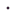
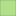
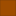
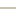

<!doctype html>
<html lang="en">
    <head>
        <meta charset="utf-8">
        <meta http-equiv="X-UA-Compatible" content="IE=edge">
        <meta name="viewport" content="initial-scale=1,user-scalable=no,maximum-scale=1,width=device-width">
        <meta name="mobile-web-app-capable" content="yes">
        <meta name="apple-mobile-web-app-capable" content="yes">
        <link rel="stylesheet" href="css/leaflet.css"><link rel="stylesheet" href="css/L.Control.Locate.min.css">
        <link rel="stylesheet" href="css/qgis2web.css"><link rel="stylesheet" href="css/fontawesome-all.min.css">
        <link rel="stylesheet" href="css/leaflet-control-geocoder.Geocoder.css">
        <link rel="stylesheet" href="css/leaflet-measure.css">
        <style>
        html, body, #map {
            width: 100%;
            height: 100%;
            padding: 0;
            margin: 0;
        }
        </style>
        <title>GEOVISOR WEB DE EQUIPAMIENTOS DE LA COMUNA 14 DE SANTIAGO DE CALI</title>
    </head>
    <body>
        <div id="map">
        </div>
        <script src="js/qgis2web_expressions.js"></script>
        <script src="js/leaflet.js"></script><script src="js/L.Control.Locate.min.js"></script>
        <script src="js/leaflet.rotatedMarker.js"></script>
        <script src="js/leaflet.pattern.js"></script>
        <script src="js/leaflet-hash.js"></script>
        <script src="js/Autolinker.min.js"></script>
        <script src="js/rbush.min.js"></script>
        <script src="js/labelgun.min.js"></script>
        <script src="js/labels.js"></script>
        <script src="js/leaflet.wms.js"></script>
        <script src="js/leaflet-control-geocoder.Geocoder.js"></script>
        <script src="js/leaflet-measure.js"></script>
        <script src="data/Jerarquizacion_vial_2.js"></script>
        <script src="data/bienestar_social_4.js"></script>
        <script src="data/recreacion_5.js"></script>
        <script src="data/culto_6.js"></script>
        <script src="data/educacion_7.js"></script>
        <script src="data/red_drenajes_8.js"></script>
        <script>
        var map = L.map('map', {
            zoomControl:true, maxZoom:19, minZoom:11
        })
        var hash = new L.Hash(map);
        map.attributionControl.setPrefix('<a href="https://github.com/tomchadwin/qgis2web" target="_blank">qgis2web</a> &middot; <a href="https://leafletjs.com" title="A JS library for interactive maps">Leaflet</a> &middot; <a href="https://qgis.org">QGIS</a>');
        var autolinker = new Autolinker({truncate: {length: 30, location: 'smart'}});
        L.control.locate({locateOptions: {maxZoom: 19}}).addTo(map);
        var measureControl = new L.Control.Measure({
            position: 'topleft',
            primaryLengthUnit: 'meters',
            secondaryLengthUnit: 'kilometers',
            primaryAreaUnit: 'sqmeters',
            secondaryAreaUnit: 'hectares'
        });
        measureControl.addTo(map);
        document.getElementsByClassName('leaflet-control-measure-toggle')[0]
        .innerHTML = '';
        document.getElementsByClassName('leaflet-control-measure-toggle')[0]
        .className += ' fas fa-ruler';
        var bounds_group = new L.featureGroup([]);
        function setBounds() {
            if (bounds_group.getLayers().length) {
                map.fitBounds(bounds_group.getBounds());
            }
            map.setMaxBounds(map.getBounds());
        }
        map.createPane('pane_OpenStreetMap_0');
        map.getPane('pane_OpenStreetMap_0').style.zIndex = 400;
        var layer_OpenStreetMap_0 = L.tileLayer('https://tile.openstreetmap.org/{z}/{x}/{y}.png', {
            pane: 'pane_OpenStreetMap_0',
            opacity: 1.0,
            attribution: '',
            minZoom: 11,
            maxZoom: 19,
            minNativeZoom: 0,
            maxNativeZoom: 19
        });
        layer_OpenStreetMap_0;
        map.addLayer(layer_OpenStreetMap_0);
        map.createPane('pane_barrios_1');
        map.getPane('pane_barrios_1').style.zIndex = 401;
        var layer_barrios_1 = L.WMS.layer("http://3.221.62.119:8080/geoserver/taller2_sig3/wms", "barrios", {
            pane: 'pane_barrios_1',
            format: 'image/png',
            uppercase: true,
            transparent: true,
            continuousWorld : true,
            tiled: true,
            info_format: 'text/html',
            opacity: 1,
            identify: false,
            attribution: '',
        });
        map.addLayer(layer_barrios_1);
        function pop_Jerarquizacion_vial_2(feature, layer) {
        }

        function style_Jerarquizacion_vial_2_0() {
            return {
                pane: 'pane_Jerarquizacion_vial_2',
                opacity: 1,
                color: 'rgba(157,149,121,1.0)',
                dashArray: '',
                lineCap: 'square',
                lineJoin: 'bevel',
                weight: 1.0,
                fillOpacity: 0,
                interactive: true,
            }
        }
        map.createPane('pane_Jerarquizacion_vial_2');
        map.getPane('pane_Jerarquizacion_vial_2').style.zIndex = 402;
        map.getPane('pane_Jerarquizacion_vial_2').style['mix-blend-mode'] = 'normal';
        var layer_Jerarquizacion_vial_2 = new L.geoJson(json_Jerarquizacion_vial_2, {
            attribution: '',
            interactive: true,
            dataVar: 'json_Jerarquizacion_vial_2',
            layerName: 'layer_Jerarquizacion_vial_2',
            pane: 'pane_Jerarquizacion_vial_2',
            onEachFeature: pop_Jerarquizacion_vial_2,
            style: style_Jerarquizacion_vial_2_0,
        });
        bounds_group.addLayer(layer_Jerarquizacion_vial_2);
        map.addLayer(layer_Jerarquizacion_vial_2);
        map.createPane('pane_comuna_14_3');
        map.getPane('pane_comuna_14_3').style.zIndex = 403;
        var layer_comuna_14_3 = L.WMS.layer("http://3.221.62.119:8080/geoserver/taller2_sig3/wms", "comuna_14", {
            pane: 'pane_comuna_14_3',
            format: 'image/png',
            uppercase: true,
            transparent: true,
            continuousWorld : true,
            tiled: true,
            info_format: 'text/html',
            opacity: 1,
            identify: false,
            attribution: '',
        });
        map.addLayer(layer_comuna_14_3);
        function pop_bienestar_social_4(feature, layer) {
            var popupContent = '<table>\
                    <tr>\
                        <td colspan="2"><strong>NOMBRE</strong><br />' + (feature.properties['nombre'] !== null ? autolinker.link(feature.properties['nombre'].toLocaleString()) : '') + '</td>\
                    </tr>\
                    <tr>\
                        <td colspan="2"><strong>LOCALIZACIÓN</strong><br />' + (feature.properties['localizaci'] !== null ? autolinker.link(feature.properties['localizaci'].toLocaleString()) : '') + '</td>\
                    </tr>\
                    <tr>\
                        <td colspan="2"><strong>SERVICIO</strong><br />' + (feature.properties['servicio'] !== null ? autolinker.link(feature.properties['servicio'].toLocaleString()) : '') + '</td>\
                    </tr>\
                    <tr>\
                        <td colspan="2"><strong>TIPO</strong><br />' + (feature.properties['tipo'] !== null ? autolinker.link(feature.properties['tipo'].toLocaleString()) : '') + '</td>\
                    </tr>\
                    <tr>\
                        <td colspan="2"><strong>PROPIEDAD</strong><br />' + (feature.properties['propiedad'] !== null ? autolinker.link(feature.properties['propiedad'].toLocaleString()) : '') + '</td>\
                    </tr>\
                </table>';
            layer.bindPopup(popupContent, {maxHeight: 400});
        }

        function style_bienestar_social_4_0() {
            return {
                pane: 'pane_bienestar_social_4',
                opacity: 1,
                color: 'rgba(35,35,35,1.0)',
                dashArray: '',
                lineCap: 'butt',
                lineJoin: 'miter',
                weight: 1.0, 
                fill: true,
                fillOpacity: 1,
                fillColor: 'rgba(159,77,0,1.0)',
                interactive: true,
            }
        }
        map.createPane('pane_bienestar_social_4');
        map.getPane('pane_bienestar_social_4').style.zIndex = 404;
        map.getPane('pane_bienestar_social_4').style['mix-blend-mode'] = 'normal';
        var layer_bienestar_social_4 = new L.geoJson(json_bienestar_social_4, {
            attribution: '',
            interactive: true,
            dataVar: 'json_bienestar_social_4',
            layerName: 'layer_bienestar_social_4',
            pane: 'pane_bienestar_social_4',
            onEachFeature: pop_bienestar_social_4,
            style: style_bienestar_social_4_0,
        });
        bounds_group.addLayer(layer_bienestar_social_4);
        map.addLayer(layer_bienestar_social_4);
        function pop_recreacion_5(feature, layer) {
            var popupContent = '<table>\
                    <tr>\
                        <td colspan="2"><strong>NOMBRE</strong><br />' + (feature.properties['nombre'] !== null ? autolinker.link(feature.properties['nombre'].toLocaleString()) : '') + '</td>\
                    </tr>\
                    <tr>\
                        <td colspan="2"><strong>LOCALIZACIÓN</strong><br />' + (feature.properties['localizacion'] !== null ? autolinker.link(feature.properties['localizacion'].toLocaleString()) : '') + '</td>\
                    </tr>\
                    <tr>\
                        <td colspan="2"><strong>PROPIEDAD</strong><br />' + (feature.properties['propiedad'] !== null ? autolinker.link(feature.properties['propiedad'].toLocaleString()) : '') + '</td>\
                    </tr>\
                    <tr>\
                        <td colspan="2"><strong>TIPO</strong><br />' + (feature.properties['tipo'] !== null ? autolinker.link(feature.properties['tipo'].toLocaleString()) : '') + '</td>\
                    </tr>\
                    <tr>\
                        <td colspan="2"><strong>ID COMUNA</strong><br />' + (feature.properties['comuna_id'] !== null ? autolinker.link(feature.properties['comuna_id'].toLocaleString()) : '') + '</td>\
                    </tr>\
                </table>';
            layer.bindPopup(popupContent, {maxHeight: 400});
        }

        function style_recreacion_5_0() {
            return {
                pane: 'pane_recreacion_5',
                opacity: 1,
                color: 'rgba(35,35,35,1.0)',
                dashArray: '',
                lineCap: 'butt',
                lineJoin: 'miter',
                weight: 1.0, 
                fill: true,
                fillOpacity: 1,
                fillColor: 'rgba(178,223,138,1.0)',
                interactive: true,
            }
        }
        map.createPane('pane_recreacion_5');
        map.getPane('pane_recreacion_5').style.zIndex = 405;
        map.getPane('pane_recreacion_5').style['mix-blend-mode'] = 'normal';
        var layer_recreacion_5 = new L.geoJson(json_recreacion_5, {
            attribution: '',
            interactive: true,
            dataVar: 'json_recreacion_5',
            layerName: 'layer_recreacion_5',
            pane: 'pane_recreacion_5',
            onEachFeature: pop_recreacion_5,
            style: style_recreacion_5_0,
        });
        bounds_group.addLayer(layer_recreacion_5);
        map.addLayer(layer_recreacion_5);
        function pop_culto_6(feature, layer) {
            var popupContent = '<table>\
                    <tr>\
                        <td colspan="2"><strong>ID CULTO</strong><br />' + (feature.properties['id'] !== null ? autolinker.link(feature.properties['id'].toLocaleString()) : '') + '</td>\
                    </tr>\
                    <tr>\
                        <td colspan="2"><strong>NOMBRE</strong><br />' + (feature.properties['nombre'] !== null ? autolinker.link(feature.properties['nombre'].toLocaleString()) : '') + '</td>\
                    </tr>\
                    <tr>\
                        <td colspan="2"><strong>TIPO</strong><br />' + (feature.properties['tipo'] !== null ? autolinker.link(feature.properties['tipo'].toLocaleString()) : '') + '</td>\
                    </tr>\
                    <tr>\
                        <td colspan="2"><strong>LOCALIZACIÓN</strong><br />' + (feature.properties['localizaci'] !== null ? autolinker.link(feature.properties['localizaci'].toLocaleString()) : '') + '</td>\
                    </tr>\
                </table>';
            layer.bindPopup(popupContent, {maxHeight: 400});
        }

        function style_culto_6_0() {
            return {
                pane: 'pane_culto_6',
                radius: 3.9999999999999996,
                opacity: 1,
                color: 'rgba(0,0,0,1.0)',
                dashArray: '',
                lineCap: 'butt',
                lineJoin: 'miter',
                weight: 1,
                fill: true,
                fillOpacity: 1,
                fillColor: 'rgba(0,0,0,1.0)',
                interactive: true,
            }
        }
        map.createPane('pane_culto_6');
        map.getPane('pane_culto_6').style.zIndex = 406;
        map.getPane('pane_culto_6').style['mix-blend-mode'] = 'normal';
        var layer_culto_6 = new L.geoJson(json_culto_6, {
            attribution: '',
            interactive: true,
            dataVar: 'json_culto_6',
            layerName: 'layer_culto_6',
            pane: 'pane_culto_6',
            onEachFeature: pop_culto_6,
            pointToLayer: function (feature, latlng) {
                var context = {
                    feature: feature,
                    variables: {}
                };
                return L.circleMarker(latlng, style_culto_6_0(feature));
            },
        });
        bounds_group.addLayer(layer_culto_6);
        map.addLayer(layer_culto_6);
        function pop_educacion_7(feature, layer) {
            var popupContent = '<table>\
                    <tr>\
                        <td colspan="2"><strong>NOMBRE</strong><br />' + (feature.properties['nombre'] !== null ? autolinker.link(feature.properties['nombre'].toLocaleString()) : '') + '</td>\
                    </tr>\
                    <tr>\
                        <td colspan="2"><strong>LOCALIZACIÓN</strong><br />' + (feature.properties['localizacion'] !== null ? autolinker.link(feature.properties['localizacion'].toLocaleString()) : '') + '</td>\
                    </tr>\
                    <tr>\
                        <td colspan="2"><strong>PROPIEDAD</strong><br />' + (feature.properties['propiedad'] !== null ? autolinker.link(feature.properties['propiedad'].toLocaleString()) : '') + '</td>\
                    </tr>\
                    <tr>\
                        <td colspan="2"><strong>TIPO</strong><br />' + (feature.properties['tipo'] !== null ? autolinker.link(feature.properties['tipo'].toLocaleString()) : '') + '</td>\
                    </tr>\
                </table>';
            layer.bindPopup(popupContent, {maxHeight: 400});
        }

        function style_educacion_7_0() {
            return {
                pane: 'pane_educacion_7',
                radius: 3.9999999999999996,
                opacity: 1,
                color: 'rgba(0,0,0,1.0)',
                dashArray: '',
                lineCap: 'butt',
                lineJoin: 'miter',
                weight: 1,
                fill: true,
                fillOpacity: 1,
                fillColor: 'rgba(217,94,205,1.0)',
                interactive: true,
            }
        }
        map.createPane('pane_educacion_7');
        map.getPane('pane_educacion_7').style.zIndex = 407;
        map.getPane('pane_educacion_7').style['mix-blend-mode'] = 'normal';
        var layer_educacion_7 = new L.geoJson(json_educacion_7, {
            attribution: '',
            interactive: true,
            dataVar: 'json_educacion_7',
            layerName: 'layer_educacion_7',
            pane: 'pane_educacion_7',
            onEachFeature: pop_educacion_7,
            pointToLayer: function (feature, latlng) {
                var context = {
                    feature: feature,
                    variables: {}
                };
                return L.circleMarker(latlng, style_educacion_7_0(feature));
            },
        });
        bounds_group.addLayer(layer_educacion_7);
        map.addLayer(layer_educacion_7);
        function pop_red_drenajes_8(feature, layer) {
            var popupContent = '<table>\
                    <tr>\
                        <td colspan="2"><strong>LONGITUD</strong><br />' + (feature.properties['longitud'] !== null ? autolinker.link(feature.properties['longitud'].toLocaleString()) : '') + '</td>\
                    </tr>\
                    <tr>\
                        <td colspan="2"><strong>NÚMERO DE CAJAS</strong><br />' + (feature.properties['n_cajas'] !== null ? autolinker.link(feature.properties['n_cajas'].toLocaleString()) : '') + '</td>\
                    </tr>\
                    <tr>\
                        <td colspan="2"><strong>VENTILACIÓN</strong><br />' + (feature.properties['ventilacion'] !== null ? autolinker.link(feature.properties['ventilacion'].toLocaleString()) : '') + '</td>\
                    </tr>\
                </table>';
            layer.bindPopup(popupContent, {maxHeight: 400});
        }

        function style_red_drenajes_8_0() {
            return {
                pane: 'pane_red_drenajes_8',
                opacity: 1,
                color: 'rgba(43,131,186,1.0)',
                dashArray: '',
                lineCap: 'square',
                lineJoin: 'bevel',
                weight: 2.0,
                fillOpacity: 0,
                interactive: true,
            }
        }
        map.createPane('pane_red_drenajes_8');
        map.getPane('pane_red_drenajes_8').style.zIndex = 408;
        map.getPane('pane_red_drenajes_8').style['mix-blend-mode'] = 'normal';
        var layer_red_drenajes_8 = new L.geoJson(json_red_drenajes_8, {
            attribution: '',
            interactive: true,
            dataVar: 'json_red_drenajes_8',
            layerName: 'layer_red_drenajes_8',
            pane: 'pane_red_drenajes_8',
            onEachFeature: pop_red_drenajes_8,
            style: style_red_drenajes_8_0,
        });
        bounds_group.addLayer(layer_red_drenajes_8);
        map.addLayer(layer_red_drenajes_8);
            var title = new L.Control();
            title.onAdd = function (map) {
                this._div = L.DomUtil.create('div', 'info');
                this.update();
                return this._div;
            };
            title.update = function () {
                this._div.innerHTML = '<h2>GEOVISOR WEB DE EQUIPAMIENTOS DE LA COMUNA 14 DE SANTIAGO DE CALI</h2>';
            };
            title.addTo(map);
            var abstract = new L.Control({'position':'bottomright'});
            abstract.onAdd = function (map) {
                this._div = L.DomUtil.create('div',
                'leaflet-control abstract');
                this._div.id = 'abstract'
                    this._div.setAttribute("onmouseenter", "abstract.show()");
                    this._div.setAttribute("onmouseleave", "abstract.hide()");
                    this.hide();
                    return this._div;
                };
                abstract.hide = function () {
                    this._div.classList.remove("abstractUncollapsed");
                    this._div.classList.add("abstract");
                    this._div.innerHTML = 'i'
                }
                abstract.show = function () {
                    this._div.classList.remove("abstract");
                    this._div.classList.add("abstractUncollapsed");
                    this._div.innerHTML = 'El proyecto "GEOVISOR WEB DE EQUIPAMIENTOS DE LA COMUNA 14 DE SANTIAGO DE CALI" busca implementar una plataforma interactiva y accesible para visualizar capas y geoservicios que representan la diversa infraestructura de la comuna. Este geovisor permitirá a la comunidad y a las autoridades locales explorar de manera integral parques, centros educativos, instalaciones de salud, red de drenajes de alcantarillado y servicios de bienestar social para la comunidad. La herramienta facilitará la participación ciudadana, y se diseñará para ser compatible con diversos dispositivos y navegadores. Además, puede ser integrada con sistemas de información geográfica existentes para una gestión eficiente de los datos geoespaciales.';
            };
            abstract.addTo(map);
        var osmGeocoder = new L.Control.Geocoder({
            collapsed: true,
            position: 'topleft',
            text: 'Search',
            title: 'Testing'
        }).addTo(map);
        document.getElementsByClassName('leaflet-control-geocoder-icon')[0]
        .className += ' fa fa-search';
        document.getElementsByClassName('leaflet-control-geocoder-icon')[0]
        .title += 'Search for a place';
        var baseMaps = {};
        L.control.layers(baseMaps,{' red_drenajes': layer_red_drenajes_8,' educacion': layer_educacion_7,' culto': layer_culto_6,' recreacion': layer_recreacion_5,' bienestar_social': layer_bienestar_social_4,"comuna_14": layer_comuna_14_3,' Jerarquizacion_vial': layer_Jerarquizacion_vial_2,"barrios": layer_barrios_1,"OpenStreetMap": layer_OpenStreetMap_0,}).addTo(map);
        setBounds();
        </script>
    </body>
</html>
